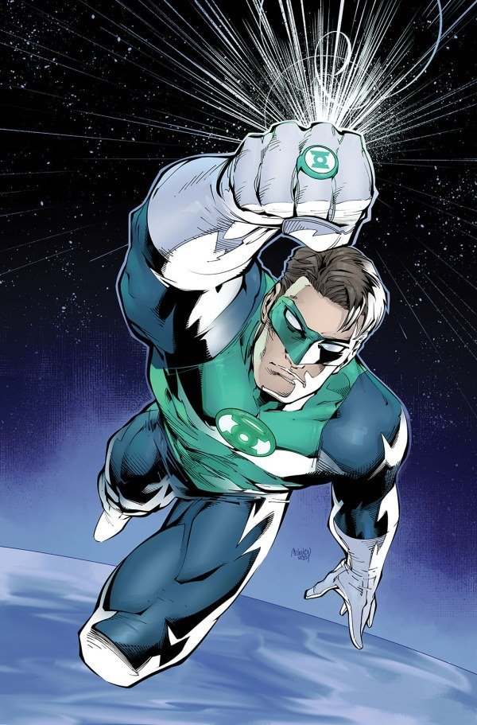
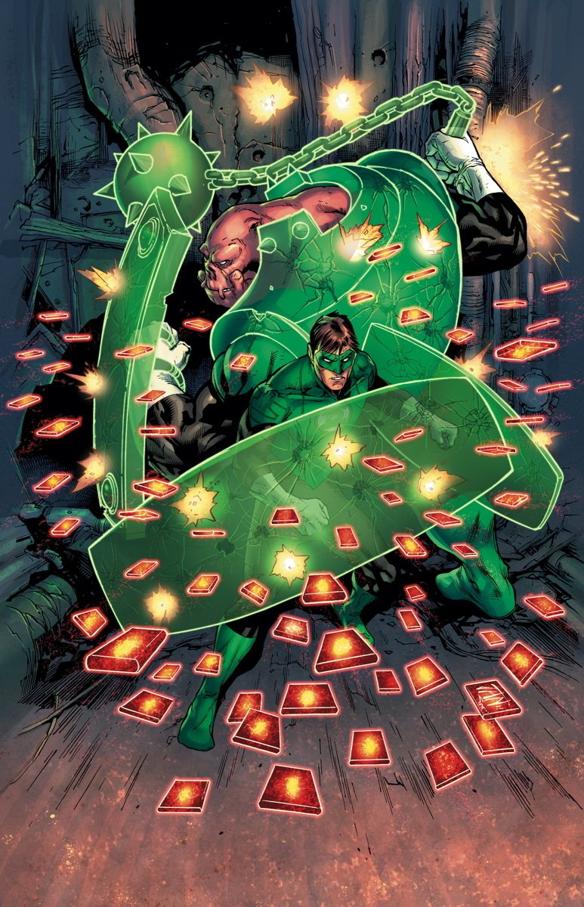
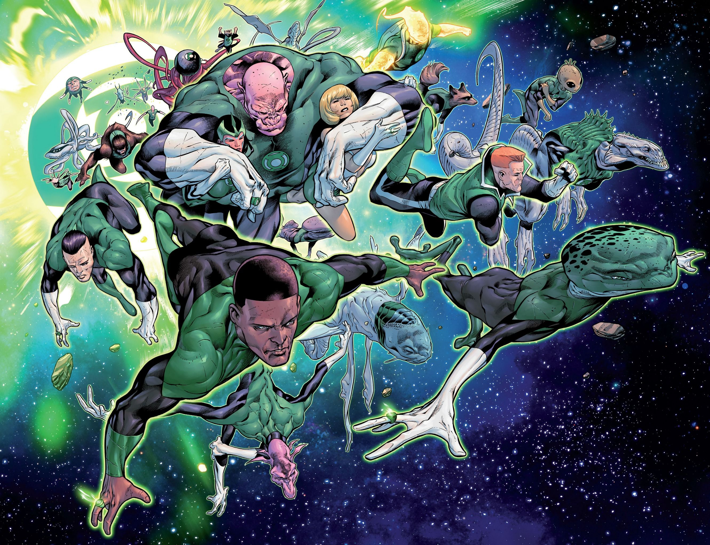
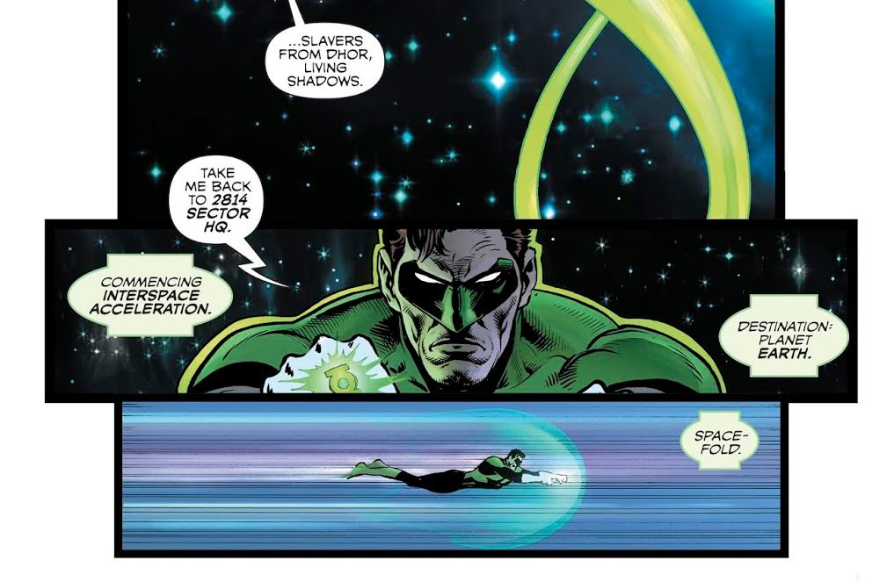

Field Guide
Powers of
the Ring
The most powerful weapon in the universe fits on one finger. Here's everything it can do — and what holds it back.
What the ring can do

The signature power. A ring turns thought into solid light — anything the wielder can imagine and hold in their mind: giant fists, cages, bridges, weapons, entire machines. The only limit is the wielder's imagination and focus. Green Lanterns are famous for them; every Corps makes constructs in its own color.

Rings grant unaided flight — from hovering over a city to crossing interstellar distances. A Lantern can outrun starships and maneuver in vacuum with precision no pilot could match.

Every ring wraps its bearer in a protective aura: shrugging off bullets, cushioning falls, and sealing in atmosphere. Lanterns fight in the vacuum of space and inside stars with nothing but the ring between them and death.

Raw blasts of emotional light — beams, bolts, and shockwaves powerful enough to shatter asteroids or stagger beings like Superman. The output scales with the wielder's emotional intensity.

The ring translates virtually any language in real time, letting a Lantern from Earth coordinate with aliens from 3,599 other sectors. It reads, speaks, and decodes on the fly.

Rings scan environments, detect life signs, analyze substances, and project holographic replays of past events. A Lantern's ring is a tricorder, microscope, and crime lab in one.

Beyond flight, rings open wormholes for near-instant interstellar travel and can phase their bearer through solid matter. Some wielders have even skimmed the edges of time itself.

The ring can knit wounds, purge toxins, and sustain the body without food, water, or air indefinitely. It won't make a Lantern immortal — but it makes them very hard to kill.
The limits
For all its power, the ring has rules — and every Lantern learns them the hard way:
- Charge. A standard power ring holds roughly 24 hours of charge at normal use; heavy combat drains it faster. Lanterns recharge from their personal power battery by reciting their oath.The oath isn't ceremony — it's the charging ritual.
- Emotion. Every ring runs on feeling. A green ring demands unbreakable willpower; doubt weakens it. Red rings run on rage, yellow on fear, and so on — the stronger the emotion, the stronger the ring.Lose control of the feeling, lose control of the ring.
- The yellow impurity. For eons, green rings could not affect anything yellow — a flaw the Guardians hid. The truth: the fear entity Parallax was imprisoned inside the Central Power Battery, and its presence tainted every green ring. The impurity is gone now, but it shaped Corps history for millennia.Fear was literally inside the green light all along.
- The bearer. A ring is only as strong, creative, and disciplined as the mind wearing it. The ring chooses those who can master their emotion — and rejects those who can't.The weapon is will; the ring is just the focus.
Not all rings are equal
Every Corps' ring works on the same principles — but each color twists them. Red rings replace the bearer's heart with burning plasma and let them vomit corrosive rage-fire. Orange rings absorb the identities of the slain into a ghostly army. Blue rings are weak alone but godlike beside a green one. Indigo staffs can channel any light. The white ring commands life itself.
Explore how each Corps wields its light on the Corps pages, and how the colors interact on the spectrum guide.